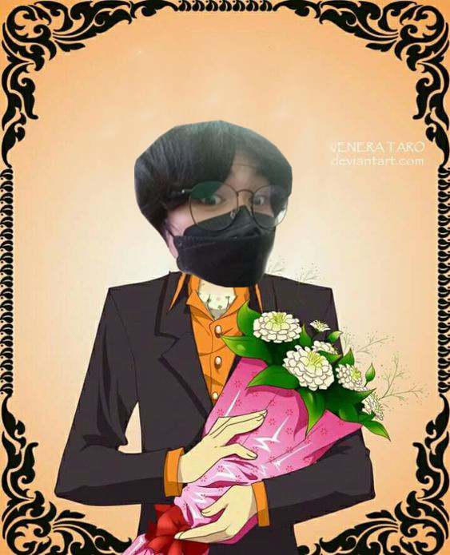
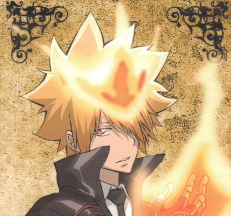

Sawada Tsunonyoshi
My picture
Personality
Tsunon is commonly referred to as a loser, he is an ordinary middle school student best known in school as "No-Good Tsunon" due to his poor grades, wimpy attitude, bad luck, and lack of athleticism, facts that Tsunon freely admits. He often doubts himself and quits easily, skipping or ditching his classes, though he becomes more confident of himself and mellows out later in the series.
Tsunon is generally depicted as becoming comically horrified by the outrageous actions of those around him, causing him to become nearly hysterical, especially by Reborn's training methods. His lack of confidence and tremendous lack of luck generally contrast humorously with the positions of leadership and external pressure Reborn puts him in. Despite his nickname, he is an earnest individual with great potential. Unfortunately, Reborn discovers that often the only way to force Tsunon to fulfill this potential is to put him in a life or death situation.
Compared to many of his friends, Tsunon is more down to earth, since he is still relatively new to the Mafia world and the supernatural. In many occasions, especially in Reborn's antics, Tsunon is able to point out all the strange things that happen before his friends are able to do so.
Although told by others that he is to be the Vongola Decimo, Tsunon is generally unwilling to take part in anything that has to do with the Mafia. He always denies the fact that he is going to be a Mafia boss. Tsunon tries to avoid matters involving the Mafia, clinging to any element of an ordinary life he can, even stating that his Guardians and subordinates are just his friends and upperclassmen. He even stated that he would rather destroy the Vongola Famiglia than to accept such a heritage.
Though he dislikes the violent history inherent in the Mafia, Tsunon is grateful for the friends he has made since meeting Reborn. He deeply cares for those he calls his family, putting himself in the way of danger and even death in order to protect them. He is also prone to anger whenever he feels that the actions of his enemies are unjustified.
Tsunon's personality has developed greatly since the beginning of the series. From being a cowardly, reluctant, and useless individual, he has developed courage and great resolve, stemming from his determination to absolutely protect the companions he has made. Later, he is depicted as being comfortable with leadership, as the people around him look to him for decisions he dispenses without hesitation.
Presumably, the future Tsunon has now settled comfortably into the role of Vongola Decimo. He has been shown to be much more confident, entrusting the task to defeat Byakuran to his past self, though still reluctant in involving the children.
There have been many similarities between Tsunon and the founder of the Vongola Famiglia, Giotto, including physical appearance, fighting techniques, and equipment. Both of their personalities are likely to be very similar as it has been shown that they have similar goals and ways of standards. For example, neither had problems with appointing Guardians from outside the Famiglia or accepting past enemies into their Famiglia. Both are also forgiving and exceptionally kind, as shown on numerous occasions; despite claiming that he will never forgive his enemies, Tsunon would end up sympathizing with and eventually forgiving them, almost immediately regarding them as his allies. If not forgiveness, Tsunon would give them a chance to atone their sins or pacify the reason of their evil deeds, only killing when there's absolutely no choice.
Sawada Skills
Guitar
Learning
Animate
Photoshop
Illustrator
Famaily
Girl friend
Age
Gender
Height
Weight
Blood Type
Nickname
Sawada Reputation
Giotto.1st Vongola
สมกับที่เป็นวองโกเล่เดชิโม่จริงๆ
Mr. Paiboon. CEO at Technical College.
ลูกศิษย์อาจารย์เก่งที่สุดเลย ผมชอบนะครับ เดี๋ยวเทอมนี้ผมให้เกรด4นะครับ
Sawada Tsunonyoshi10th Vongola
ผมจะดูแลแฟมิลี่และทำหน้าที่ของรุ่นที่10ให้ดีที่สุด
Personal Songs
- Song Name : 88
- Anime : Katekyo Hitman Reborn!
- Time in song : 4:00
- Opening: 4
- Artist : LM.C.
-
Reborn Logo - Click to listen
- Song Name : BOYS&GIRLS
- Anime : Katekyo Hitman Reborn!
- Time in song : 4:12
- Opening: 2
- Artist : LM.C.
-
Reborn Logo - Click to listen
Contact Me
Lopburi, Thailand
Phone: 082-457-9661
Email: knnp1111@gmail.com

Lets get in touch. Send me a message: